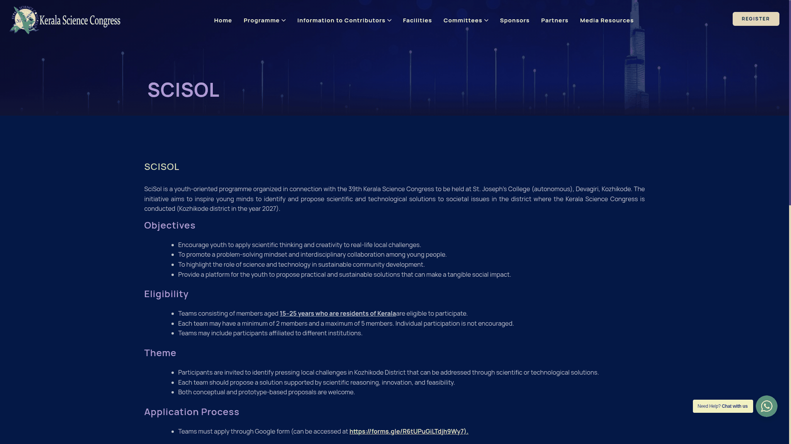

SciSol: ₹50,000 for the best Kerala youth science solution
Have a practical science or technology idea for a real problem in Kozhikode district? SciSol, organised in connection with the 39th Kerala Science Congress, invites Kerala-resident teams aged 15-25 to submit proposals. The best entry will receive ₹50,000. The official brochure gives Tuesday, 15 December 2026 as the last date to apply.
Who can enter
- Every team member must be a resident of Kerala and aged 15-25 years, according to the official guidelines.
- Teams must have 2-5 members. The guideline says individual participation is not encouraged; the live form requires a leader and at least one other member.
- Members may come from different institutions. The published eligibility is not restricted to students at one college.
- The proposal must address a local challenge in Kozhikode district. Being based elsewhere in Kerala does not remove this theme requirement.
The official rules use residents of Kerala, not a Kerala birthplace test. They do not specify an age-calculation cutoff date. If a member turns 15 or 26 around the deadline or event, confirm eligibility with the convener before applying.
What you can propose
Your team's original idea should identify a genuine local problem and explain a scientific or technological solution, with reasoning and a realistic plan. Both conceptual proposals and proposals with prototypes are welcome. A finished product is not a stated requirement.
For example, a team could investigate a locally observed water-management or waste-management problem and explain a feasible solution. These are illustrative ideas from AiCoN, not prescribed problem statements or a guarantee of selection. Start with evidence from the actual community rather than a generic invention pitch.
Prize and selection
The best entry receives a ₹50,000 cash prize. This is one competition award, not ₹50,000 for every participant or every team. Outstanding entries may receive certificates of merit. Selected teams get an opportunity to present their proposals at the Kerala Science Congress venue.
An expert committee screens applications. Shortlisted proposals will be invited for presentation. Evaluation considers the problem's relevance, scientific basis, originality and creativity, feasibility and impact, and clarity of presentation. This is judged selection, not an announced random draw.
The 39th Kerala Science Congress is scheduled for 28-31 January 2027 at St. Joseph's College (Autonomous), Devagiri, Kozhikode. The checked SciSol rules do not specify its exact presentation slot or promise travel/accommodation support.
Prepare these details
We opened the live form linked by the official SciSol page without entering or submitting data. Its visible fields ask for:
- Proposal title.
- Group leader's name and date of birth, plus each member's name and date of birth. Leader and member 1 are required; additional members are optional up to the five-person total.
- Communication address, mobile number, alternate mobile number and email address.
- Abstract of the identified societal problem: limit shown as 2,000 characters.
- Methodology: limit shown as 5,000 characters.
- Proposed science and technology intervention/solution: limit shown as 5,000 characters.
- Optional relevant drawings, photographs or supporting materials. The question says PDF and JPEG; the uploader displays up to five files and a maximum of 100 MB per file. Recheck the live uploader before preparing large files.
Those are character limits, not word limits. Write the three sections offline first. Explain the Kozhikode connection, what evidence supports the problem, how the solution works, what resources it needs and how you would check whether it helps.
How to apply
- Read the official SciSol page, guidelines and brochure.
- Form an eligible 2-5 person team and agree who will be the group leader. Check all members' ages and Kerala residence.
- Prepare the proposal sections and optional supporting files using the limits above. Use the team's original work.
- Open the Google Form linked by the organiser. Check its title: “39th KSC-SCISOL S&T SOLUTION”. Choose the Google account you intend to associate with the submission.
- Complete the required fields, inspect attachments and review before submitting. Save whatever confirmation the form provides. We did not submit a test entry, so we have not verified its confirmation or editing options.
- Apply by 15 December 2026. The brochure does not specify a closing time or timezone. Do not assume 11:59 PM; submit early and ask the organiser if timing matters.
The form warns that the Google account's name, email address and photo will be recorded when files are uploaded and the form is submitted. Do not submit from somebody else's account by mistake.

Fees, costs and unanswered details
No SciSol entry fee is stated on the checked page, guidelines, brochure or visible form. The wider Science Congress has separate delegate-registration information; do not assume those fees are the SciSol application fee or that all event attendance costs are covered. Confirm any later payment, travel or attendance requirement directly with the convener before committing.
The organiser can modify programme details. Entries must be original, and the expert screening/judging committees' decision is final. The checked sources do not explain an age cutoff date, detailed presentation schedule, prize-payment timing or reimbursement policy.
Official contact
Dr. Siju C.R., Convener, SciSol
Email: scisolksc2027@gmail.com
Mobile: 9742783872
Landline: 0471-2548236
Video guide
We could not verify a reliable English or Malayalam video walkthrough for this specific SciSol application. Use the official written rules and live form rather than an unrelated Science Congress registration tutorial.
What we verified
We read the organiser's SciSol page, guideline PDF and brochure, and opened its linked live application. The ₹50,000 prize and eligibility are in the official rules; the 15 December deadline and 28-31 January event dates are printed in the official brochure. No entry was completed, file uploaded or form submitted.
Sources: official SciSol page, guidelines, brochure and linked application. Checked 14 November 2026. AiCoN explainer, not a government publication.